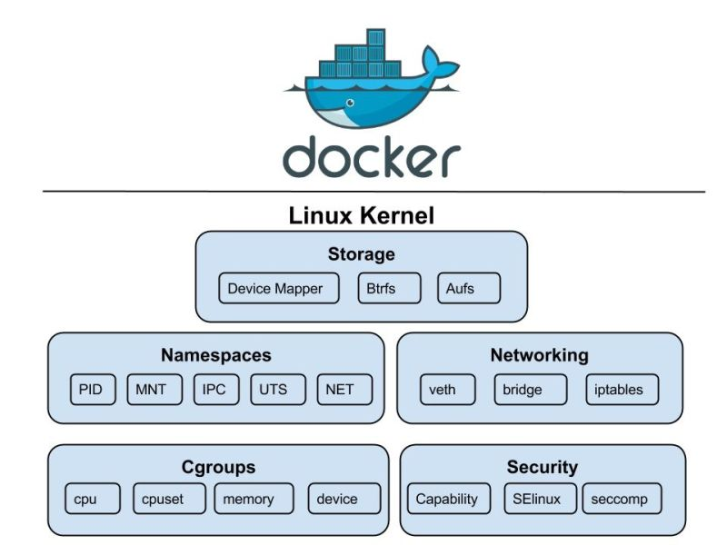

DevOps
Git
Git qu'est ce que c'est ? :
- Git est un logiciel de gestion de versions décentralisée.
- Git s'appuie sur une arborescence de fichiers et permet de stocker et de connaître l'intégralité de la chronologie et des modifications (ajout, suppression, modification) qui lui on été apportées.
- Le concept de décentralisation sert principalement à permettre à des membres d'une même équipe
à travailler de manière désynchronisée des autres et éviter d'écraser les modifications des autres
lors d'un accès concurrentiel à un fichier.
- Avec Git, chacun clone le dépôt en local sur son poste, puis n'envoie au serveur que ses modifications après avoir récupéré et fusionné les modifications des autres.
- Git surveille l'arborescence des fichiers et stock en mémoire une copie binaire de chaque fichier à chaque étape chronologique.
- Git permet une grande flexibilité dans la manière dont les développeurs collaborent sur un projet
Docker
Docker
- Déf 1: Une plateforme qui permet de créer, déployer et exécuter des applications dans des conteneurs isolés.
- Déf 2: Docker est un ensemble de produits PaaS qui utilisent la virtualisation au niveau du système d'exploitation
pour fournir des logiciels dans des packages appelés conteneurs.
- Les conteneurs sont isolés les uns des autres et regroupent leurs propres logiciels, bibliothèques et fichiers de configuration.
- Ils peuvent communiquer entre eux via des canaux bien définis.
- Tous les conteneurs sont exécutés par un seul noyau de système d'exploitation et utilisent donc moins de ressources qu'une machine virtuelle.
Dockerfile
- Il contient les instructions de construction d’une image (base image, dépendances, fichiers copiés, ports exposés, etc.)
- Il est le code source d'une image Docker.
- Il se compose d'instructions définies pour créer une image Docker.
Un conteneur
- C’est une instance en cours d’exécution d’une image [ le modèle cad l’image devient un processus actif ] c’est comme une petite boîte qui contient tout ce qu’il faut pour faire tourner une application (code, dépendances, configurations…).
- L’image c’est la recette et le conteneur c’est le plat préparé à partir de cette recette.
Une image
- C'est un modele qui contient tout ce qui est nécessaire pour exécuter une application: code, runtime, outils système, bibliothèques système et paramètres.
- C’est un modele qui représente un logiciel léger, autonome et exécutable : les images deviennent des conteneurs au moment de l'exécution
- L’image docker permet de créer des conteneurs docker qui sont faciles à transporter d'une plateforme à une autre.
- Les instructions données dans le fichier Dockerfile sont appelées couches dans l'image Docker: donc l’image Docker se compose de plusieurs couches en fonction du nombre d'instructions que nous avons données.
Différence entre un conteneur et une machine virtuelle
- Une VM virtualise le système d’exploitation complet, alors qu’un conteneur partage le même noyau du système et ne contient que les dépendances nécessaires à l’application
- → plus léger et plus rapide.
- Isolation légère : Isolation moins complète, mais suffisante pour les apps
- Le conteneur est isolé pour ses processus, son système de fichiers, et son réseau virtuel, mais tout accès au matériel passe par le noyau du système.

Les foundations existent déjà bien avant :
- 𝐍𝐚𝐦𝐞𝐬𝐩𝐚𝐜𝐞𝐬 (PID, NET, MNT, UTS, IPC) pour isoler les processus
- 𝐂𝐠𝐫𝐨𝐮𝐩𝐬 pour contrôler CPU, RAM et I/O
- 𝐂𝐡𝐫𝐨𝐨𝐭 + 𝐨𝐯𝐞𝐫𝐥𝐚𝐲 filesystems pour gérer le système de fichiers
Aujourd'hui, que ce soit 𝐜𝐨𝐧𝐭𝐚𝐢𝐧𝐞𝐫𝐝, 𝐫𝐮𝐧𝐜, 𝐏𝐨𝐝𝐦𝐚𝐧 𝐨𝐮 𝐊𝐮𝐛𝐞𝐫𝐧𝐞𝐭𝐞𝐬, tous utilisent exactement les mêmes primitives Linux.
Docker Questions
- Quelle différence entre COPY et ADD dans un Dockerfile ?
- COPY copie simplement des fichiers locaux.
- ADD peut aussi extraire des archives et il peut télécharger des fichiers depuis une URL Souvent, on préfère COPY (plus prévisible).
- Qu’est-ce que docker-compose ?
- Un outil qui permet de définir et gérer plusieurs conteneurs comme un seul service, via un fichier docker-compose.yml.
- Différence entre ENTRYPOINT et CMD ?
- ENTRYPOINT définit le processus principal du conteneur.
- CMD fournit les arguments par défaut (peut être écrasé).
- Qu’est-ce qu’un multi-stage build ?
- Technique pour réduire la taille des images Docker en utilisant plusieurs étapes dans un même Dockerfile :
- Qu’est-ce qu’un réseau Docker ?
- Un mécanisme qui permet aux conteneurs de communiquer entre eux et avec l’extérieur, Tout en restant isolés selon le type de réseau choisi.
- Docker crée par défaut un réseau bridge. On peut aussi créer des réseaux personnalisés pour permettre la communication entre conteneurs :
- Qu’est-ce qu’un registry ?
- Un registre Docker (comme Docker Hub, GitLab Registry ou Amazon ECR) est un dépôt où sont stockées les images.
Kubernetes
- TODO